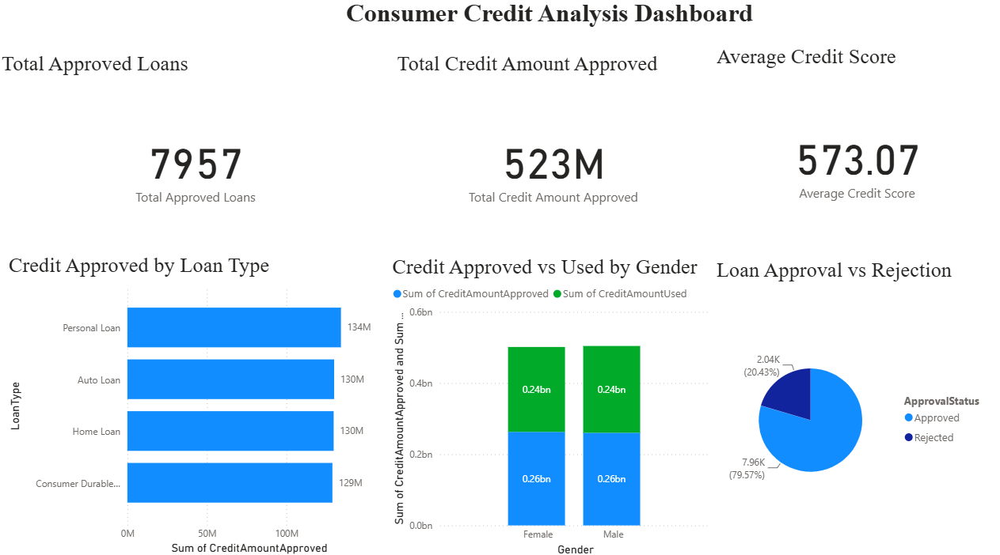
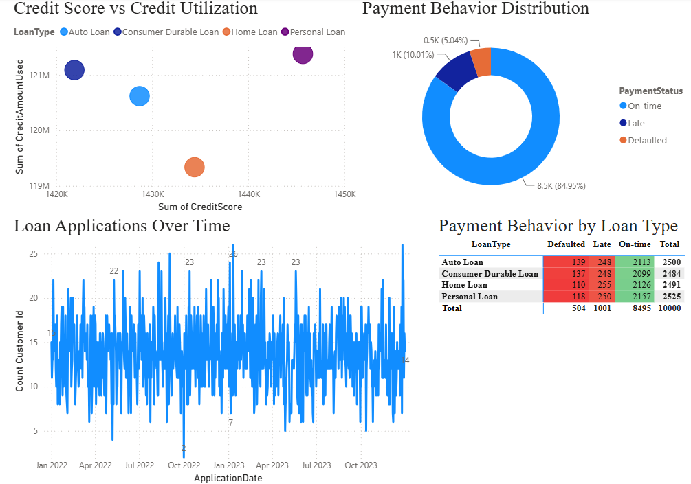
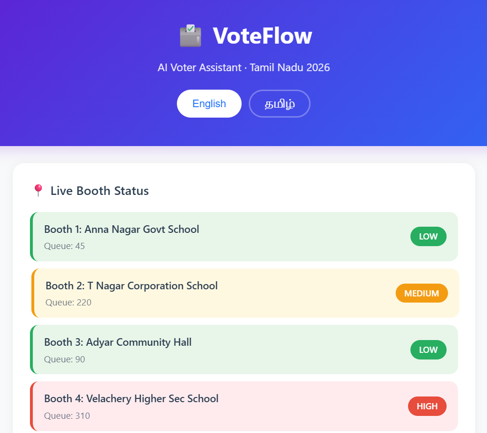
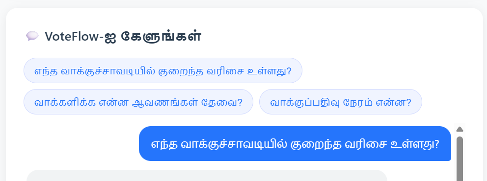
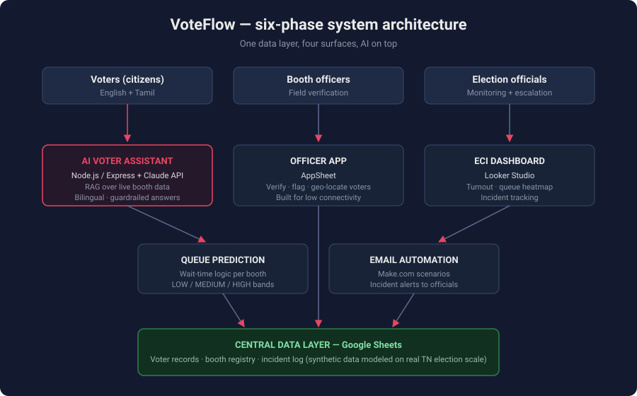
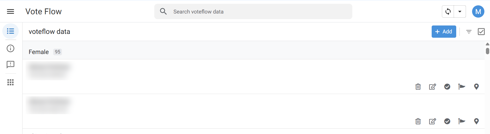

About
Professional Summary
PM L2 at ClaySys Technologies, promoted within 6 months. Expertise in business analysis, requirements engineering, product strategy, and stakeholder alignment. I lead product discovery, author requirements documentation, coordinate UAT at enterprise scale, and drive cross-functional teams through complex Agile and Waterfall delivery cycles.
My background combines technical product thinking with financial domain knowledge (NISM certifications) and strategic business acumen (MBA Finance & Marketing). I'm passionate about solving complex business problems with data-driven decision making and operational rigor.
Key Highlights
- Promoted to PM L2 within 6 months at ClaySys
- 15+ enterprise BRDs across 2 SaaS products
- 50+ features coordinated through UAT and release
- Zero scope deviation — eliminated requirement gaps through rigorous elicitation
- 70+ sprint tasks managed end-to-end on Azure DevOps
- Financial domain expertise — NISM certifications (Mutual Fund Distributor, Securities Foundation)
- MBA Finance & Marketing from Bharathiar University (78.77%)
- IIT Roorkee BA/PM certification — industry-aligned training
Case Studies
Zero-Defect UAT: From Chaos to Process Excellence
Role: Business Analyst & UAT Lead | Project: BPO Suite (Enterprise Workflow Automation)
The Problem: First UAT cycle for BPO Suite resulted in excessive user-logged defects, stakeholder frustration, and delayed go-live. Root cause: loose acceptance criteria, inadequate requirements traceability, and insufficient upstream validation.
What I Did:
- Tightened acceptance criteria in BRDs before development, eliminating ambiguity
- Implemented upstream requirements validation with business stakeholders before dev sign-off
- Created detailed test scenarios mapped 1:1 to requirements
- Led daily UAT coordination with operations, QA, and dev teams
- Owned defect tracking, triage, and sign-off workflow
The Result: Second UAT cycle achieved 100% defect reduction (zero user-logged bugs). Process rigor increased. Stakeholder confidence rebuilt. Go-live completed on schedule.
Key Takeaway: Defect prevention upstream through rigorous BA discipline is infinitely more efficient than defect management downstream.
NextGen Auth: Enterprise SaaS Authentication at Scale
Role: Product Manager & Requirements Owner | Project: NextGen Auth (External-Facing SaaS)
The Challenge: Owned end-to-end delivery of a subscription-based SaaS authentication platform serving multiple external customers. Required meticulous requirements engineering, wireframe alignment, and UAT coordination across 50+ features.
What I Did:
- Authored 8+ BRDs and FRDs translating customer needs into precise dev specs
- Led 50+ UI/UX wireframe reviews with design, dev, and product teams
- Coordinated UAT for 50+ features with detailed test scenarios and acceptance criteria
- Owned defect tracking, root cause analysis, and customer sign-off
- Authored product and user manuals for external customer delivery
- Managed 30+ change requests, balancing scope, schedule, and quality
The Result: Zero critical requirement misses. 100% customer sign-off. On-time delivery of external SaaS product.
Key Takeaway: Rigorous traceability between customer needs, requirements, design, dev specs, and UAT is the foundation of enterprise product quality.
Credit Portfolio Analytics: Data-Driven Insights at Scale
Role: Business Analyst & Analytics Owner | Project: Consumer Credit Analysis Dashboard
The Brief: Build a Power BI dashboard analyzing 10,000+ customer credit records to enable portfolio-level decision making, risk assessment, and operational insights.
What I Built:
- Designed KPI cards for approved loans, credit scores, and portfolio composition
- Visualized loan distributions by type, customer demographics, and approval status
- Implemented Row-Level Security (RLS) for secure role-based access
- Configured automated scheduled refresh in Power BI Service
- Developed DAX formulas for complex aggregations and trend analysis
The Impact: Leadership gained real-time visibility into 10,000+ customer portfolios. Risk patterns surfaced. Portfolio optimization decisions enabled.
Key Takeaway: Data storytelling + RLS + automation = operational intelligence at enterprise scale.

Executive overview — a 10,000-customer credit portfolio distilled into three KPIs, loan-type mix, and an 80/20 approval-rejection split that surfaced risk concentration.

Behavioral segmentation — a 5% default rate isolated by loan type using conditional formatting; defaults cluster evenly across products, pointing to pricing rather than product mix. Built on a 10,000-row modeled dataset with DAX measures and Row-Level Security.
Skills & Expertise
Product Management
- Product Vision & Strategy
- Product Roadmapping
- Feature Prioritization (RICE)
- Product Discovery
- Customer Research
- Competitive Analysis
- Success Metrics & KPIs
- Change Request Management
Business Analysis
- Requirement Elicitation
- BRD/FRD/PRD Documentation
- Use Cases & User Stories
- Stakeholder Analysis
- Gap Analysis
- Business Rules Definition
- Acceptance Criteria
- Non-Functional Requirements
Project Management
- Agile/Scrum Delivery
- Sprint Planning & Execution
- UAT Coordination
- Defect Management
- Stakeholder Management
- Release Planning
- Azure DevOps
- JIRA
Technical & Data
- SQL (MS SQL Server)
- Power BI (DAX, RLS, Refresh)
- Data Visualization
- Excel (Advanced)
- Process Flow Diagrams
- System Architecture
- API Understanding
Emerging Tech & AI
- LLMs & Prompt Engineering
- RAG (Retrieval Augmented Generation)
- AI Trade-offs (Latency, Cost, Accuracy)
- AI-Powered Products
- Workflow Automation
Certifications & Domain
- IIT Roorkee BA/PM Certification
- NISM Mutual Fund Distributor
- NISM Securities Foundation
- Microsoft SQL Certification
- Power BI Certification
- MBA Finance & Marketing
Key Projects
BPO Suite – Enterprise Workflow Automation Platform
Tech: Agile/Waterfall | Scope: Enterprise BPO Operations
What it is: Internal enterprise workflow automation platform for ClaySys BPO operations, automating manual process workflows across multiple business units.
My Role: End-to-end product ownership — requirements, UAT coordination, stakeholder management, defect tracking, release planning.
Key Achievement: Delivered zero-defect second UAT cycle through rigorous upstream requirements validation and acceptance criteria tightening.
NextGen Auth – Subscription SaaS Authentication Platform
Tech: Agile/Scrum | Scope: External-facing SaaS product
What it is: Subscription-based SaaS authentication platform for external customers, supporting 50+ features across multiple authentication scenarios.
My Role: Product Manager — BRD/FRD authoring, wireframe reviews, UAT coordination, customer sign-off, user manual authorship.
Key Metrics: 50+ features delivered | 100% customer sign-off | Zero critical requirement misses
Consumer Credit Analysis Dashboard
Tech: Power BI | Dataset: 10,000+ customer records
What it is: Executive-ready analytics dashboard analyzing credit portfolio composition, approvals, risk metrics, and demographic distributions.
My Role: Analytics owner — data modeling, visualization design, RLS implementation, DAX formula development.
Impact: Real-time portfolio visibility | Risk pattern detection | Data-driven decision making
VoteFlow – AI-Powered Civic Tech Platform
Tech: Node.js/Express | Claude API | RAG | AppSheet | Looker Studio | Make.com | Bilingual (Tamil/English)
The Problem: On election day in Tamil Nadu, voters don't know how long booth queues are, what documents they need, or where to go — and most digital tools serve English speakers first, leaving Tamil-first voters behind.
What I Built: A six-phase voter assistance system — a central data layer, a booth officer field app, an officials' monitoring dashboard, incident alert automation, queue prediction, and an AI voter assistant on top — designed as one product, not six tools.

Live booth status — queue predictions color-coded LOW / MEDIUM / HIGH for instant scanning, with a language toggle on the very first screen.

Vernacular-first AI — suggested prompts, queue answers, and guardrails fully functional in Tamil. Not translated as an afterthought; designed bilingual from day one.

System architecture — one central data layer feeding four surfaces, with the Claude-powered assistant retrieving live booth data through RAG.

Booth officer companion app — verify, flag, and geo-locate voters in two taps, built for low-connectivity field conditions. Voter details anonymized; all data is synthetic, modeled on real Tamil Nadu election scale.
Key PM Decisions: Bilingual-first rather than English-first | Queue status as color bands rather than raw numbers (scannable under stress) | AI answers constrained to retrieved booth data to prevent hallucinated election information | Officer app optimized for two-tap actions in the field
GitHub: View Repository (live demo deployment in progress)
Get In Touch
Open to opportunities in Product Management, Business Analysis, and Technical Program Management at leading product companies.